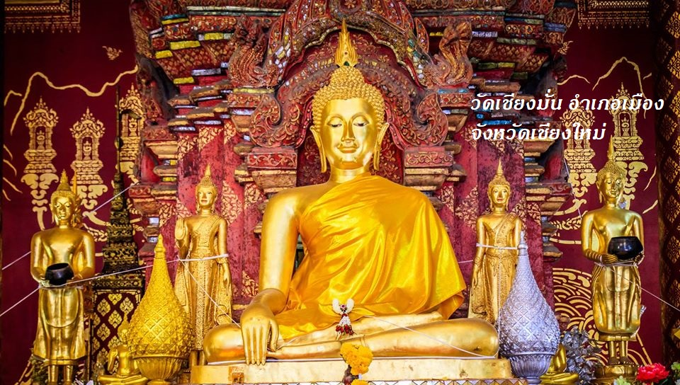

วัดเชียงมั่น จังหวัดเชียงใหม่

 ประวัติ
ประวัติ

เมื่อสร้างเสร็จแล้วพระแก้วขาวจึงได้ประดิษฐานที่เมืองละโว้มาเป็นเวลาช้านาน จนกระทั่งสุเทวฤาษีสร้างนครหริภุญชัยขึ้นแล้ว จึงได้เชิญเสด็จพระแม่เจ้าจามเทวี พระราชธิดาพระเจ้ากรุงละโว้มาครองนครหริภุญชัย พระแม่เจ้าจามเทวีจึงได้อัญเชิญพระแก้วขาวมาเป็นพระพุทธรูปบูชาประจำพระองค์ พระแก้วขาวจึงประดิษฐาน ณ นครหริภุญชัยมาเป็นเวลาหลายร้อยปี
พญามังราย ได้ยึดครองนครหริภุญชัยได้ใน พ.ศ.1824 และได้เผาเมือง ต่อมาพญามังรายได้เสด็จตรวจความเสียหาย พบว่าหอพระในพระราชวังไม่ได้ถูกเพลิงไหม้ เมื่อทอดพระเนตรดูพบว่าพระแก้วขาวประดิษฐานอยู่ ณ ที่หอพระ จึงเกิดพระราชศรัทธาและอัญเชิญพระแก้วขาวมาประดิษฐานยังที่ประทับของพระองค์ และบูชาเป็นพระพุทธรูปพระจำพระองค์ เมื่อพญามังรายสร้างนครเชียงใหม่เป็นราชธานีในปี พ.ศ.1839 จึงได้อัญเชิญพระแก้วขาวมาประดิษฐานในพระราชวัง คือบริเวณวัดเชียงมั่นในปัจจุบัน จนกระทั่งในสมัยพระเจ้าติโลกราช กษัตริย์ลำดับที่ 11 แห่งราชวงศ์มังราย ทรงมีพระราชศรัทธาเลื่อมใสในพระพุทธศาสนา ได้โปรดฯ ให้สร้างหอพระแก้วมรกต (พระพุทธมหามณีรัตนปฏิมากร) และพระแก้วขาวตามอย่างโลหะปราสาทของกรุงลังกาไว้ในพระอารามราชกุฎาคารเจดีย์ หรือวัดเจดีย์หลวง

ประมาณ พ.ศ.2035 ในรัชสมัยพระยอดเชียงรายครองนครเชียงใหม่ มีคนร้ายขโมยพระแก้วขาวไปถวายกษัตริย์แห่งกรุงศรีอยุธยา พระยอดเชียงรายจึงยกทัพ ติดตามไปอัญเชิญพระแก้วขาวกลับมาประดิษฐานที่นครเชียงใหม่ตามเดิม พ.ศ.2089 พระแก้วขาวตกไปอยู่กับอาณาจักรล้านช้างเป็นเวลากว่า 225 ปี เมื่อพระบาทสมเด็จพระพุทธยอดฟ้าจุฬาโลกมหาราชยกทัพไปปราบล้านช้างสำเร็จ จึงได้อัญเชิญพระแก้วขาวมาประดิษฐาน ณ วัดเชียงมั่น อันเป็นที่ซึ่งพญามังรายทรงมีพระราชศรัทธาอัญเชิญพระแก้วขาวมาประดิษฐานเป็นครั้งแรก


พระแก้วขาวหรือพระเสตังคมณีประดิษฐานเป็นศูนย์รวมจิตใจของชาวนครเชียงใหม่จึงได้รับการดูแลรักษาและอนุรักษ์ซ่อมแซมอยู่เสมอ ในปี พ.ศ.2416 พระเจ้าอินทวิชยานนท์ เจ้าผู้ครองนครเชียงใหม่ ได้เป็นประธานในการสร้างแท่นแกะสลักด้วยไม้แก่นจันทน์หุ้มด้วยทองคำหนัก 300 บาท 3 ซีก เจ้าราชภาคินัยและเจ้าอุบลวัณณา สร้างฉัตรทองคำถวายหนัก 100 บาท พร้อมกับจารึกบนแผ่นทองคำใต้แท่นพระเป็นภาษาล้านนาไว้เป็นหลักฐาน ต่อมาฉัตรทองคำได้หายไปคงเหลือแต่ที่ปักแกนก้านฉัตรเท่านั้น ปี พ.ศ.2539 นครเชียงใหม่มีอายุครบ 700 ปี จึงได้มีการบูรณะฐานพระแก้วขาว เนื่องจากได้มีการอัญเชิญพระแก้วขาวออกมาให้ประชาชนสรงน้ำพระ เป็นประจำทุกปี ทำให้เนื้อไม้แก่นจันทน์บวมขยายออก มีผลให้แผ่นทองคำที่หุ้มอยู่ปริแตก นอกจากนี้ยังได้มีการสร้างฉัตรทองคำน้ำหนัก 123 บาท ประดับเพชร 9 เม็ด และพลอยอีก 37 เม็ด ถวายแด่พระแก้วขาวด้วย

วัดเชียงมั่น เป็นพระอารามแห่งแรกที่พญามังรายทรงสร้างขึ้นภายในกำแพงเมืองเชียงใหม่ ประมาณ พ.ศ.1839 - 1840 โดยพระราชทานที่ดินบริเวณพระตำหนักเวียงเชียงมั่นเป็นที่สร้าง ภายในวัดเก็บรักษาโบราณวัตถุที่สำคัญ คือ "พระเสตังคมณี หรือ พระแก้วขาว" สลักจากหินควอตซ์สีขาวขุ่น (หินเขี้ยวหนุมาน) ศิลปล้านนา พญามังรายทรงอัญเชิญมาจากเมืองหริภุญไชย พระพุทธรูปศิลาปางทรมานช้างนาฬาคีรี ฝีมือสกุลช่างปาละ (พุทธศตวรรษที่ 13-14) และ ศิลาจารึกกล่าวถึงประวัติของวัดและเมืองเชียงใหม่จารึกเมื่อ พ.ศ. 2124 โบราณสถานที่สำคัญคือ พระเจดีย์ช้างล้อม อายุเกือบ 700 ปี

ตามตำนานกล่าวว่า เมื่อสมเด็จพระสัมมาสัมพุทธเจ้าได้เสด็จดับขันธ์ปรินิพพานล่วงไปแล้ว๗๐๐ ปี ในวันเพ็ญเดือน ๗ สุเทวฤๅษีได้นำเอาดอกจำปา ๕ ดอกขึ้นไปบูชาพระจุฬามณีบนสวรรค์ชั้นดาวดึงส์ ได้พบปะสนทนาด้วยพระอินทร์ซึ่งพระอินทร์ได้บอกแก่สุเทวฤๅษีว่า ปีนี้ในเดือนวิสาขะเพ็ญที่ลวะรัฎฐจะสร้างพระพุทธปฏิมากรด้วยแก้วขาวครั้นสุเทวฤๅษีกลับจากดาวดึงส์เทวโลกแล้วจึงไปสู่เมืองละโว้ขณะนั้นพระยารามราชเจ้าเมืองละโว้กับ พระกัสสปเถรเจ้าปรารภการที่จะสร้างพระแก้วซึ่งพระอรหันต์ไปได้แก้วขาวบริสุทธิ์บุษยรัตน์มาจากจันทเทวบุตรแล้วขอพระวิศณุกรรมมาเนรมิต สำเร็จรูปเป็นองค์พระพุทธปฏิมากร สุเทวฤๅษีและฤๅษีอื่นๆก็ได้ไปประชุมช่วยในการสร้างพระด้วยเมื่อสำเร็จแล้วจึงได้บรรจุพระบรมสารีริกธาตุ ๔ องค์ไว้ในพระโมลี (กระหม่อม) ๑ องค์พระนลาต (หน้าผาก) ๑ องค์ พระอุระ (หน้าอก) ๑ องค์ พระโอษฐ์ (ปาก) ๑ องค์ รวม ๔ แห่งเมื่อสร้างเสร็จแล้วพระแก้วขาวจึงได้ประดิษฐานที่เมืองละโว้มาเป็นเวลาช้านานจนกระทั่งสุเทวฤๅษีสร้างนครหริภุญชัยขึ้นแล้ว จึงได้เชิญเสด็จพระแม่เจ้าจามเทวีพระราชธิดาพระเจ้ากรุงละโว้มาครองนครหริภุญชัยพระแม่เจ้าจามเทวีจึงได้อัญเชิญพระแก้วขาวมาเป็นพระพุทธรูปบูชาประจำพระองค์พระแก้วขาวจึงประดิษฐาน ณ นครหริภุญชัยมาเป็นเวลาหลายร้อยปีพญามังรายได้ยึดครองนครหริภุญชัยได้ใน พ.ศ. ๑๘๒๔ และได้เผาเมือง ต่อมาพญามังรายได้ เสด็จตรวจความเสียหาย พบว่าหอพระในพระราชวังไม่ได้ถูกเพลิงไหม้เมื่อทอดพระเนตรดูพบว่าพระแก้วขาวประดิษฐานอยู่ ณ ที่หอพระจึงเกิดพระราชศรัทธาและอัญเชิญพระแก้วขาวมาประดิษฐานยังที่ประทับของพระองค์และบูชาเป็นพระพุทธรูปพระจำพระองค์ ประมาณ พ.ศ. ๒๐๓๕ ในรัชสมัยพระยอดเชียงรายครองนครเชียงใหม่มีคนร้ายขโมยพระแก้วขาวไปถวายกษัตริย์แห่งกรุงศรีอยุธยา พระยอดเชียงรายจึงยกทัพติดตามไปอัญเชิญพระแก้วขาวกลับมาประดิษฐานที่นครเชียงใหม่ตามเดิม
ช้อมูลอ้างอิง และ รูปภาพประกอบ
Create By

Chalee team
CAMT CMU
Contact
Email : hatsumine@gmail.com
 Caution!
Caution!
เว็ปไซต์นี้ถูกสร้างขึ้นมาโดยไม่แสวงหากำไรใดๆทั้งสื้น
หากต้องการบริจาคไทยทานต่างๆ กรุณาติดต่อทางวัดโดยตรง